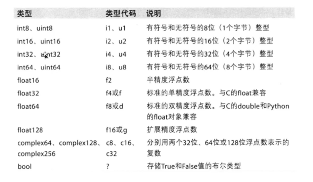

a=np.array(range(1,4),dtype=float) //dtype="float32"
print(type(a))
print(a.dtype)
b = np.array([0,1,0,1,0,1],dtype=bool)
print(b) //[false,true,false...]
调整数据类型
a.astype("int8")
np.round(a,2) //去两位小数

读取数据
np.loadtxt(frame.dtype=np.float, delimiter=None, skiprows=0, usecols=None, unpack=False)

索引和切片
a[ [0,1,2],[0,2,2] ] #(0,0) (1,2) (2,2)
a[ [2,5,6] ] #取多行
布尔索引
a[a>2] = 3
a[a == 2] = 3
numpy的三元运算符
np.where(t<10,0,10) #把t<10的数改为0，t>10的数改为10
numpy中的裁剪
a.clip(10,18)
数组的拼接
np.vstack(a,b) #竖直拼接
np.hstack(a,b)
数组的行列交换
a[[1,2],:] = a[[2,1],:] #1、2行交换
a[:,[0,2]] = a[:,[2,0]]
生成随机数
np.rand
np.randn
np.randint
np.uniform( low, high, (shape) )
np.normal( loc,scale, (size) ) #指定的正态分布
numpy的注意点copy和view
1.a=b完全不复制，a和b相互影响
2.a=b[:]，视图的操作，一种切片，会创建新的对象a，但是a的数据完全有b保管，他们两个的数据变化是一致的
3.a=b.copy()，复制，a和b互不影响
numpy中的nan和inf


常用统计方法
t.sum()
t.mean()
t.max()
t.min()
t.std()
np.median(t)
np.ptp(t) #极值
例（将nan替换为均值）